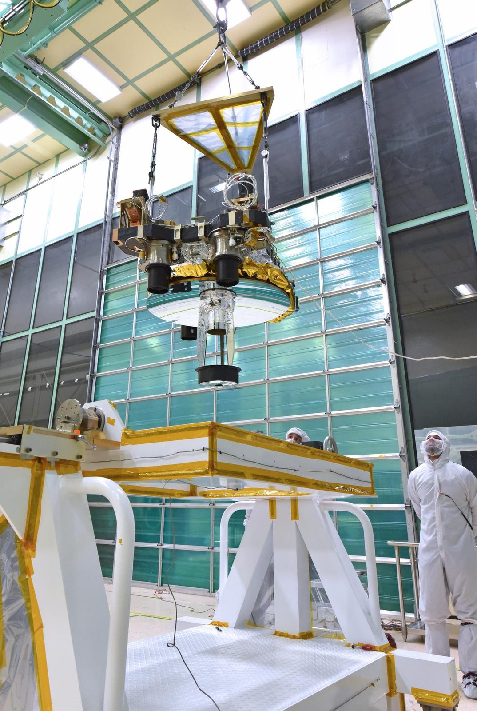

Leave the planet better than we found it.
At SSAI, the science is real and the work is meaningful. For nearly fifty years our scientists, engineers, data analysts, and IT professionals have helped the world's science agencies see the Sun, the Earth, and the universe more clearly. Come work on problems that matter.
Meaningful work, real science.
We offer challenging problems, competitive salaries, outstanding benefits, and proactive support for career growth, in an environment where you can find balance between life and work, stay challenged intellectually, and be rewarded for innovative ideas and excellent performance.
Every contribution feeds a larger purpose: missions that watch the climate, search for and rescue people in distress, and explore the planets. You will not wonder whether your work matters. You will see it fly, see it published, and see it serve.
A culture built on service.
SSAI's goal is to cultivate a diverse culture of creativity, collaborative innovation, and belonging, an environment where all are welcomed, heard, and celebrated in an equitable and supportive manner. A central theme of our culture is service.
Many of our people work in a badgeless environment alongside government scientists and fellow contractors, with flexible hours and locations and a genuine commitment to work-life balance. The result is a workplace recognized as a Washington Post Top Workplace five years running.

NASA / Goddard Space Flight Center NASA / Johnson Space Center
NASA / Johnson Space Center
 NASA / Goddard Space Flight Center
NASA / Goddard Space Flight Center
 NASA / Kennedy Space Center
NASA / Kennedy Space Center
Benefits that support your whole life.
Our benefits program focuses on total well-being, with the flexibility and choice to support your health, retirement, career goals, and work-life balance.
Health & family
Health, dental, vision, and life insurance, extended to employees' families and domestic partners, so the people you care for are cared for too.
CoverageTime to recharge
Paid time off in addition to all federal holidays, with flexible hours and locations that respect a real life outside of work.
BalancePlan for the future
Retirement support and a benefits structure designed around choice, so you can build the plan that fits where you are and where you are headed.
RetirementWe invest in our people.
Investing in our people sits at the center of our strategy. SSAI University (SSAIU) is the centralized umbrella for the education and development of our workforce, created to build a culture of learning that prepares employees to meet changing needs.
That commitment is recognized beyond our walls: SSAI was named to TopWorkplaces' 2025 Professional Development Top Workplaces list.
- A single home for training, mentoring, and continued learning
- Development paths that follow the science as it evolves
- Recognized on the 2025 Professional Development Top Workplaces list
 NASA / Ames Research Center
NASA / Ames Research Center
Welcomed, heard, and considered on merit.
SSAI welcomes veterans and military-connected professionals, whose mission discipline and service ethic fit naturally with our work.
SSAI is proud to be an Affirmative Action / Equal Opportunity Employer. We provide equal employment opportunity for all persons in all facets of employment and encourage minorities, women, protected veterans, and individuals with disabilities to apply for any position for which they feel qualified.
SSAI does not tolerate discrimination or harassment of any kind. Applicants who wish to view SSAI's Affirmative Action Plan, or who require reasonable accommodation in the application or interview process, may contact Human Resources at hr@ssaihq.com.
Your work, around the world.
From clean rooms beside NASA Goddard to control rooms and data centers across the country, SSAI people turn the view from space into understanding on the ground, reaching 125 countries and 35,000+ schools through the GLOBE program, and aiding roughly 7,000 lives through the search-and-rescue program we have helped operate for more than 25 years.
Find where you fit.
Search current openings and apply online. Every applicant is considered on merit, and every hire joins a company where science is pursued with passion and integrity.
New graduates and students: ask about SSAI internships. Browse job postings to find where you fit, and bring your curiosity, your rigor, and your service ethic with you.
 NASA / Goddard Space Flight Center / Bill Hrybyk
NASA / Goddard Space Flight Center / Bill Hrybyk